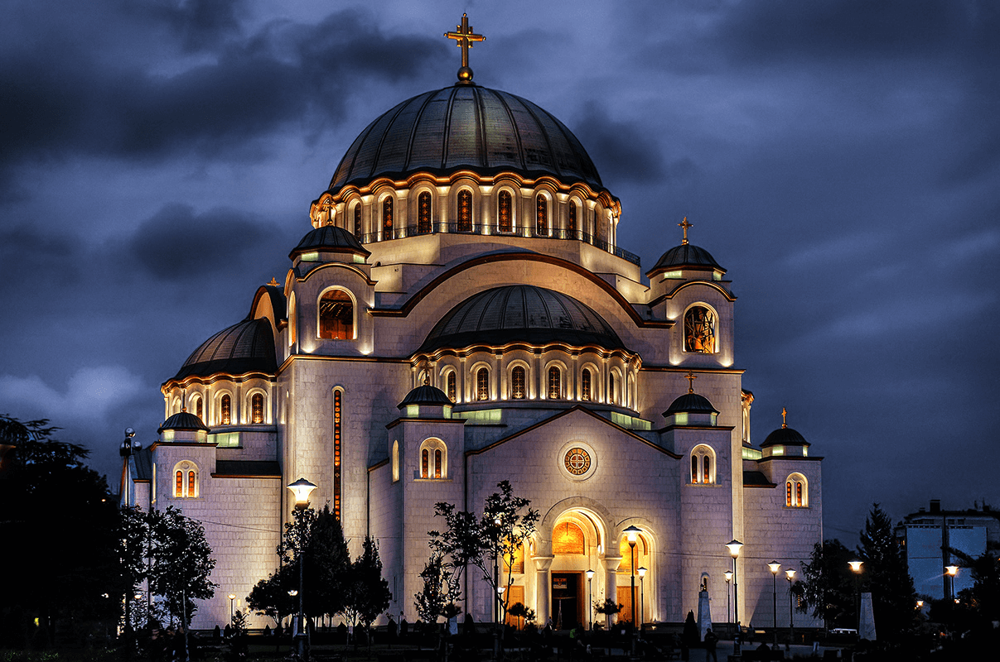

Blog
Iako je strancima najpoznatiji po svojoj tituli u noćnom životu, pravi duh Beograda ćete osetiti kroz obilaske i ljude koje budete sreli u njemu. Zbog toga smo odvojili nekoliko lokacija koje ne smete propustiti ako nam se nađete u poseti.
„Beograd nije u Beogradu, jer Beograd, u stvari i nije grad – on je metafora, način života, ugao gledanja na stvari."
Momo Kapor
Reka Sava
Terazijska česma
Prolaz do Savskog keja
Kalemegdan
Beogradsku ili Kalemegdansku tvrđavu čine Gornji, Donji grad i Kalemegdanski park. Beogradska tvrđava je 1979. godine proglašena za "spomenik kulture od izuzetnog značaja". Najposećenija je turistička atrakcija Beograda. Pošto je ulaz besplatan, procenjuje se da je ukupan broj posetilaca (stranih, domaćih i Beograđana) preko 2 miliona godišnje. Takođe je i svojevrsna oaza u centru grada i omiljeno mesto za odmor i rekreaciju mnogih Beograđana. Revitalizacija kompleksa je jedan od prioriteta, koji čuva njegovu istoriju i obezbeđuje njegovu budućnost.


Knez Mihailova ulica
Knez Mihailova je glavna pešačka ulica u centru Beograda. Od Kalemegdana (centralni park i tvrđava) ide do Trga Republike (glavnog centralnog trga), a nastavlja do Terazijskog trga, cepajući centar grada na dva dela. Ova ulica je jedno od najboljih mesta da osetite puls grada. Knez Mihailova je dom mnogih nacionalnih i međunarodnih kulturnih institucija, brojnih kafića i restorana, nekoliko hotela i hostela, kao i mnoštvo prodavnica domaćih i svetskih brendova.

Hram Svetog Save
Iz kojeg god pravca da priđete glavnom gradu Srbije, postoji jedno zdanje koje nećete moći da propustite. Hram Svetog Save je ne samo najveća srpska pravoslavna crkva, ona je najveća pravoslavna bogomolja na Balkanu i jedna od najvećih pravoslavnih hramova na svetu. Njegova ukupna visina dostiže 82 m, kupola je visoka 70 m, a glavni pozlaćeni krst daje joj dodatnih 12 m visine. U zvonicima se nalazi više od 49 zvona i preko 18 pozlaćenih krstova na kupolama.
Hram Svetog Save danas zauzima posebno mesto u srcima Beograđana. To je mesto okupljanja, bezbedno utočište i važno mesto podrške svima kojima je potrebna. Među njegovim zidinama dele svoju radost i tugu stanovnici prestonice Srbije, a obeležavanje važnih praznika ispred nje je odavno postalo tradicija. Jedno od najvećih okupljanja ispred Hrama je ono na Badnje veče. Hiljade vernika okupilo se oko ogromnog ognjišta na otvorenom gde se pali „badnjak”. Tako se ponoćna liturgija i Božić svake godine proslavljaju sa ogromnom radošću i uzbuđenjem. Još jedan spektakularan događaj je doček pravoslavne Nove godine kada Srbi dočekuju Novu godinu uz fenomenalan vatromet, muziku, igru i smeh.

Zemun
Zemun je opština grada Beograda. Zemun je bio zaseban grad koji je 1934. godine pripojen Beogradu. Simbol Zemuna je stara Gardoš kula, izgrađena 1896. godine u čast hiljadu godina mađarskog naseljavanja u Panonskoj niziji. Prelepa atrakcija je obala reke Dunav. To je mesto gde ljudi dolaze da provode vreme u prirodi, opuštaju se, jedu u restoranima na vodi, hrane labudove ili idu na plažu Lido na Velikom ratnom ostrvu koje je povezano sa obalom u toku leta.